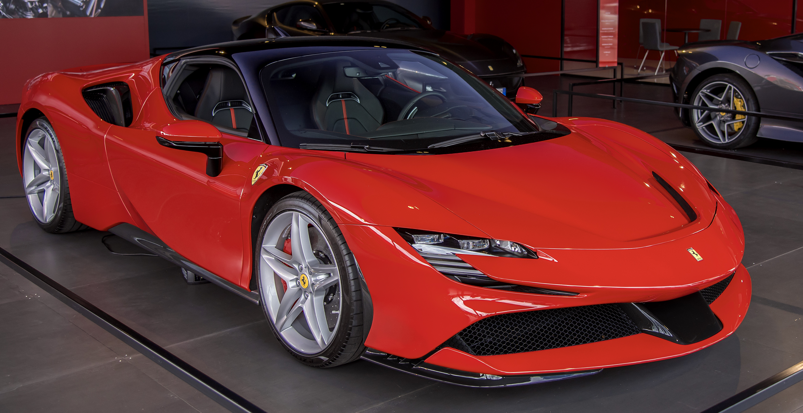

Explore The Ferroro Range



Form that is both exciting and reassuring...
Read MoreFerroro will start introducing major updates from Imola, and expects to surge to the front of the field not long after...
Read More